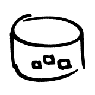

En los inicios de la programación, los programas se desarrollaban con la llamada programación imperativa. De hecho, y como sabes, la programación orientada a objetos surgió unos años después.
Con la expansión de la programación orientada a objetos, se da la circunstancia de que las bases de datos relacionales se siguen utilizando hoy en día de manera masiva, por lo que muchas aplicaciones se desarrollan con POO pero los datos, no se almacenan en bases de datos orientadas a objetos, sino en las bases de datos relacionales.
El sistema más extendido en las empresas hoy en día para guardar la información de sus aplicaciones es el uso de una base de datos relacional. Tradicionalmente, dichas aplicaciones están basadas en sentencias
SQL con las cuales se gestionan todos los datos que manejan. Este sistema es la base para el continuo crecimiento del mapeo Objeto-Relacional (O/R) y está asociado a los mecanismos de persistencia.
Cuando se programan sistemas orientados a objetos, utilizando una base de datos relacional, los programadores invierten gran cantidad de tiempo en desarrollar los objetos persistentes, o sea, convertir los objetos del lenguaje de programación a registros de la base de datos. Igualmente, también pasan bastante tiempo implementando la operación inversa, es decir, convirtiendo los registros en objetos.
El mapeo objeto-relacional (Object-Relational Mapping, o ORM) consisten en una técnica de programación para convertir datos entre el sistema de tipos utilizado en un lenguaje de programación orientado a objetos y el sistema utilizado en una base de datos relacional.
Cuando se trabajan con programación orientada a objetos y con bases de datos relacionales, es fácil observar que estos son dos paradigmas diferentes. El modelo relacional trata con relaciones y conjuntos, es de naturaleza matemática. Por el contrario, el paradigma orientado a objetos trata con objetos, atributos y asociaciones de unos con otros.
Cuando se requiere almacenar la información de los objetos utilizando una base de datos relacional se comprueba que hay un problema de compatibilidad entre estos dos paradigmas, el llamado desfase objeto-relacional.
Por ello, para ahorrar trabajo al programador, se puede utilizar un framework que se encargue de realizar estas tareas de modo transparente, de modo que el programador no tenga por qué usar JDBC ni SQL y la gestión del acceso a base de datos esté centralizada en un componente único permitiendo su reutilización.
Es un software que suele constar de módulos de software concretos, y que permite organizar y desarrollar un proyecto software. Normalmente incluye soporte de programas, librerías y un lenguaje interpretado entre otros programas para ayudar a desarrollar y unir los diferentes componentes de un proyecto.